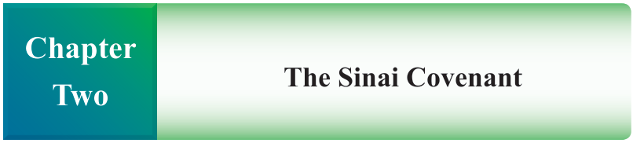
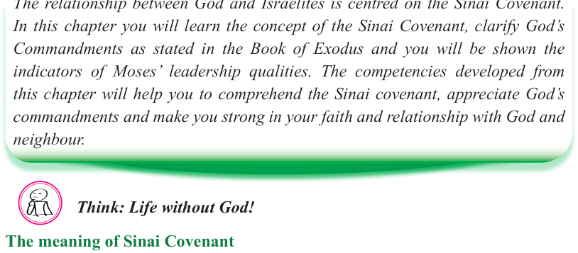
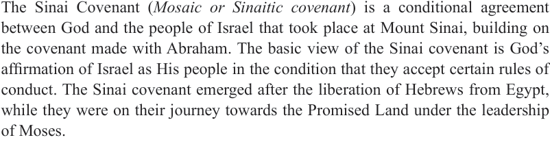

Form Two
Tanzania Institute of Education (TIE)


Bible Knowledge
27


Introduction
The relationship between God and Israelites is centred on the Sinai Covenant.
In this chapter you will learn the concept of the Sinai Covenant, clarify God’s
Commandments as stated in the Book of Exodus and you will be shown the indicators of Moses’ leadership qualities. The competencies developed from this chapter will help you to comprehend the Sinai covenant, appreciate God’s commandments and make you strong in your faith and relationship with God and neighbour.
Think: Life without God!
The meaning of Sinai Covenant
The Sinai Covenant (Mosaic or Sinaitic covenant) is a conditional agreement between God and the people of Israel that took place at Mount Sinai, building on the covenant made with Abraham. The basic view of the Sinai covenant is God’s affirmation of Israel as His people in the condition that they accept certain rules of conduct. The Sinai covenant emerged after the liberation of Hebrews from Egypt, while they were on their journey towards the Promised Land under the leadership of Moses.
The term covenant comes from a Hebrew word “berit” which means testament or covenant. Berit is a serious, dignified agreement between two parts; whether between man and man or between God and man. By its nature “berit” binds forever; it is a permanent agreement. For example, marriage is a berit between man and woman which binds the couple in a permanent union. The “berit” between God and
Man has God as its origin or initiator. That is to say, God invites man to enter into a covenant and man responds to God’s invitation. The “berit” between God and man dispenses God’s blessings, grace, and eventually gives God’s salvation. Berit is very much concerned with the economy of salvation, justice and ethical relationships.
The term “berit” is translated into Latin as “testamentum”. The testamentum was transliterated into English as Testament.


The Sinai Covenant
Chapter
Two